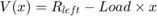
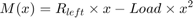
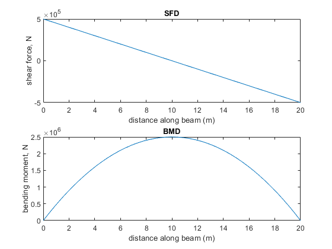
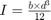
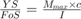
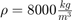
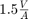

Problem 1: Fully Stressed Beams
Pretty bored on 8 April 2021, I decided to design a problem related to solid mechanics and share it among my friends. It looked more like a satirical trick question because of the prolog and epilog added to the statement (see image), so it received little attention. Around a year and quarter later, it's time to solve the question once and for all.
By: Minerva-007
Contents
Problem statement
A fully stressed non-prismatic simply supported rectangular beam of length 20m and width 3m is subjected to a uniform load of 50kN/m. The mass of the beam is included in the load. The material used has the properties E=210 GPa; YS=135 MPa. Applying a factor of safety of 1.69,
- determine the central deflection in the beam;
- draw the elastic curve;
- draw the variation of cross section w.r.t. span.
Defining constants
A few constants that will be used throughout the writeup are defined here.
- Material constants: elastic constant, yield strength. This is actually data for S135 steel.
E=210e9; YS=135e6;
- Geometric constants: length, width.
Len=20; wid=3;
- Design data: FoS and load distribution. (1.69 is low FoS for a safe design, more on that later).
FoS=1.69; load_dis=50e3;
Basic statics
A few calculations to get started.
F_load=load_dis * Len R_left=F_load/2 R_right=R_left
F_load =
1000000
R_left =
500000
R_right =
500000
The shear and bending moment diagram. Remembering that shear and bending moment distributions are consecutive integrals of load distribution, and realizing that in a simply supported beam the end conditions are reaction force for shear and zero for bending moment, this is simple.


V = @(x) -load_dis* x + R_left; M = @(x) -load_dis* x^2 *0.5 + R_left*x; figure subplot(2,1,1) fplot(V,[0 Len]) xlabel("distance along beam (m)") ylabel("shear force, N") title("SFD") subplot(2,1,2) fplot(M,[0 Len]) xlabel("distance along beam (m)") ylabel("bending moment, N") title("BMD")

To figure out maximum bending moment, we find M at Len/2.
M_max=M(Len/2)
M_max =
2500000
Design by max bending moment
Perhaps the simplest method in beam designing is to simply determine M_max, and determine the moment of inertia that supports this bending moment. Then, proceed to design a prismatic beam with a constant cross-sectional area.
Defining I by using relation

I = @(d) wid * d^3 /12;
Loading symbolic variables
syms d;
Solve the equation

Replacing c by d/2 and I by function convert to single-precision float, and dump resultsbeam1.d=single(solve(YS/FoS==M_max*(d/2)/I(d), d)); beam1.d=beam1.d(2);
Picking th +ve value, the answer is 25.02cm, or roughly 5 inches.
Let us determine the central deflection of this prismatic beam.
beam1.def = 5 * load_dis * Len^4 / (384 * E * I(beam1.d));
Determining the mass of the beam, assuming that it is steel such that

beam1.vol = Len * wid * beam1.d; beam1.mass = beam1.vol * 8000; beam1
beam1 =
struct with fields:
d: 0.2502
def: 0.1267
vol: 15.0111
mass: 1.2009e+05
Since a shear force of 50kN is being applied at the ends, a check is performed to determine the effect of shear stress on the beam. Knowing that maximum shear in a rectangular cross-section occurs at the central line with magnitude equal to

,shear_stress= 1.5 * V(0) / (wid * beam1.d);
converting it into equivalent normal stress by employing Von Mises factor,
eq_normal = sqrt(3) * shear_stress eq_normal/(YS/FoS)
eq_normal =
single
1.7308e+06
ans =
single
0.0217
So, it is visible that even in the worst-but-theoretically-impossible situation of maximum shear overlapping with maximum bending moment, it accounts for no more than 2.2% of stress. Hence, it can be ignored. Further details can be analyzed in this side quest.
Design by fully stressed beam
Before diving into design, following points are to be noted:
WIP